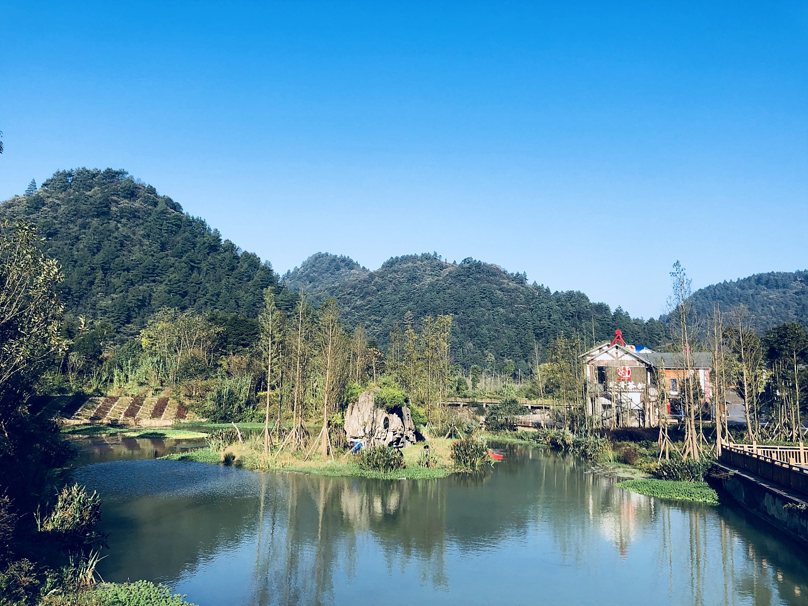
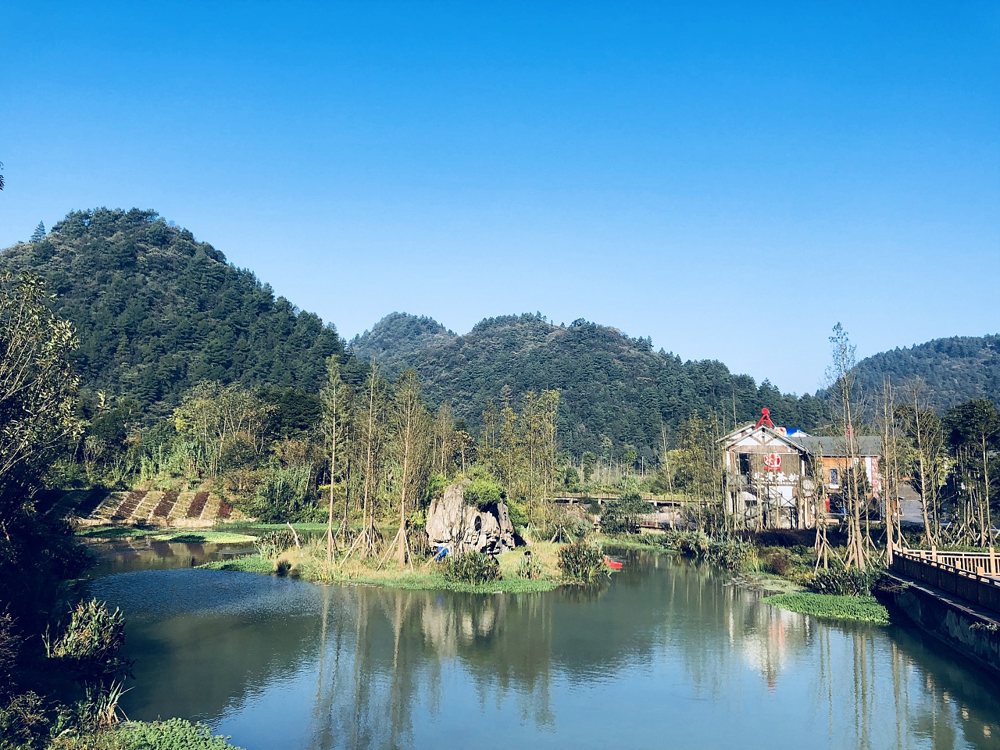
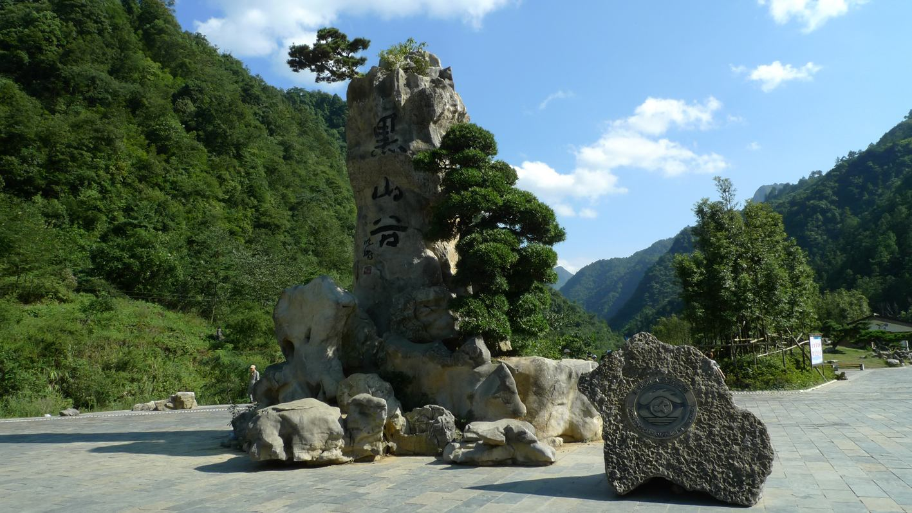
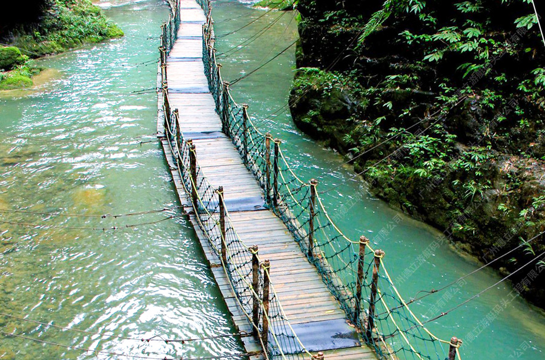
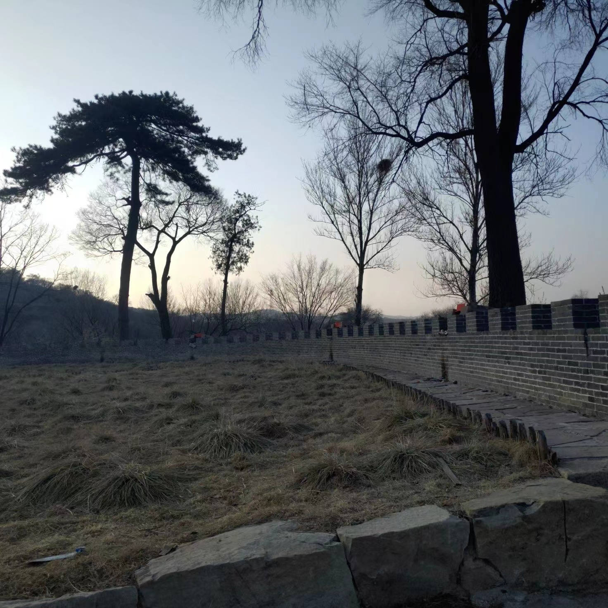

.jpg) 

黑山谷位于万盛区景星乡境内，距万盛城区20公里。这里山高林密、溪河纵横、人迹罕至，保存着地球上同纬度为数不多的亚热带和温带完好的自然生态，森林覆盖率达97%，被专家誉为“渝黔生物基因库”，是目前重庆地区最大的、原始生态保护最完好的自然生态风景区。 黑山谷景区原始生态风景由峻岭、峰林、幽峡、峭壁、森林、林海、飞瀑、碧水、溶洞、栈道、浮桥、云海、田园、原始植被、珍稀动植物等200多个景点景观组成。 黑山谷风景区全长13公里，其中有6公里的电瓶车车程，6公里的栈道和浮桥，1公里的上山观光索道（也可步行）。从景区大门进入，沿河而下至响水村一段，河谷宽约40―50米，沿河有平缓地，上面是丘陵和山地，呈阶梯状地形，河谷断面呈“V”字形，河面狭窄。以下河段宽度一般约20米，有的河段仅几米，其中，鱼跳峡、野猪峡、猴跳峡，最宽不足10米，最窄处仅两米，采取浮桥、吊桥方式通行，极 富挑战性。黑山谷顶底高度在400―600米之间，河谷两岸谷坡陡直，坡度一般在70―80度，部分岸坡直立在90度以上，高在1200米左右，其形象奇妙无比。 景区有黑山大佛、夜郎公主峰、九曲画屏、白玉观音、石剑峰、石皇伞、隐佛崖、天王峰、骆驼西行、黑猴迎宾、鲤鱼峡、笔架山、散花瀑、灯台瀑、神龙峡、飞云瀑等独具特色的景点景观。 景区集渝黔自然山水之幽、秀、险、奇特点于一体，荟萃了西南喀斯特地貌风光之精华，是旅游观光、休闲避暑、度假探险、采风考古、地质科考的理想去处。
  黑山谷位于万盛区景星乡境内，距万盛城区20公里。这里山高林密、溪河纵横、人迹罕至，保存着地球上同纬度为数不多的亚热带和温带完好的自然生态，森林覆盖率达97%，被专家誉为“渝黔生物基因库”，是目前重庆地区最大的、原始生态保护最完好的自然生态风景区。 黑山谷景区原始生态风景由峻岭、峰林、幽峡、峭壁、森林、林海、飞瀑、碧水、溶洞、栈道、浮桥、云海、田园、原始植被、珍稀动植物等200多个景点景观组成。 黑山谷风景区全长13公里，其中有6公里的电瓶车车程，6公里的栈道和浮桥，1公里的上山观光索道（也可步行）。从景区大门进入，沿河而下至响水村一段，河谷宽约40―50米，沿河有平缓地，上面是丘陵和山地，呈阶梯状地形，河谷断面呈“V”字形，河面狭窄。以下河段宽度一般约20米，有的河段仅几米，其中，鱼跳峡、野猪峡、猴跳峡，最宽不足10米，最窄处仅两米，采取浮桥、吊桥方式通行，极 富挑战性。黑山谷顶底高度在400―600米之间，河谷两岸谷坡陡直，坡度一般在70―80度，部分岸坡直立在90度以上，高在1200米左右，其形象奇妙无比。 景区有黑山大佛、夜郎公主峰、九曲画屏、白玉观音、石剑峰、石皇伞、隐佛崖、天王峰、骆驼西行、黑猴迎宾、鲤鱼峡、笔架山、散花瀑、灯台瀑、神龙峡、飞云瀑等独具特色的景点景观。 景区集渝黔自然山水之幽、秀、险、奇特点于一体，荟萃了西南喀斯特地貌风光之精华，是旅游观光、休闲避暑、度假探险、采风考古、地质科考的理想去处。